Screenshots for Video LIDzV7zXTi4
Slide from 2 seconds before the transition at: 00:01
Slide from 2 seconds before the transition at: 04:15
Slide from 2 seconds before the transition at: 05:23
Slide from 2 seconds before the transition at: 15:10
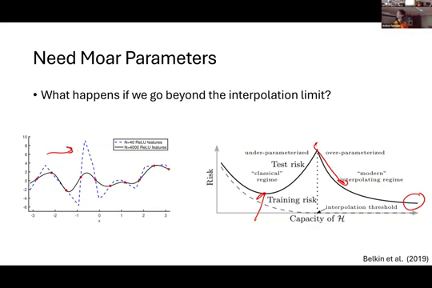
Slide from 2 seconds before the transition at: 16:59
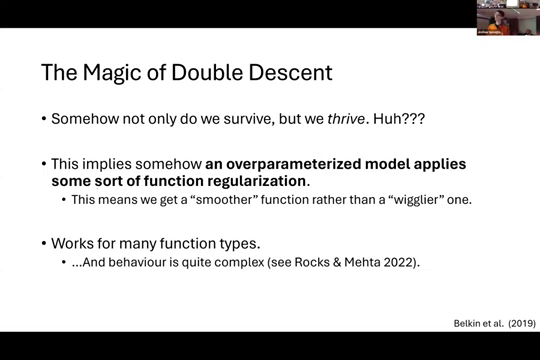
Slide from 2 seconds before the transition at: 20:55
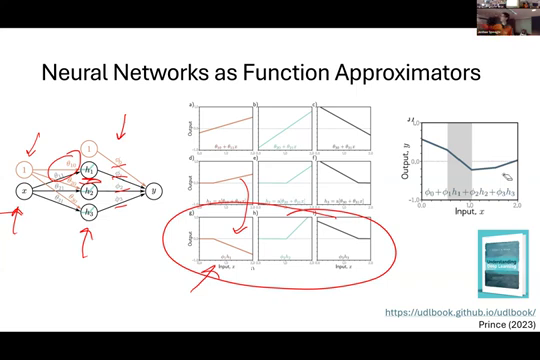
Slide from 2 seconds before the transition at: 27:12
Slide from 2 seconds before the transition at: 28:02
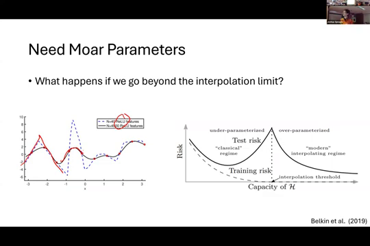
Slide from 2 seconds before the transition at: 31:18
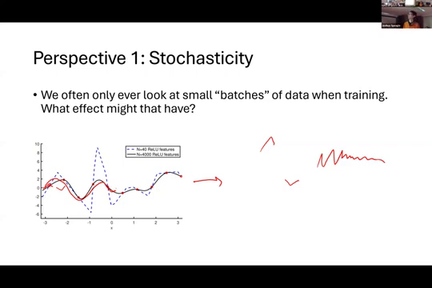
Slide from 2 seconds before the transition at: 38:49
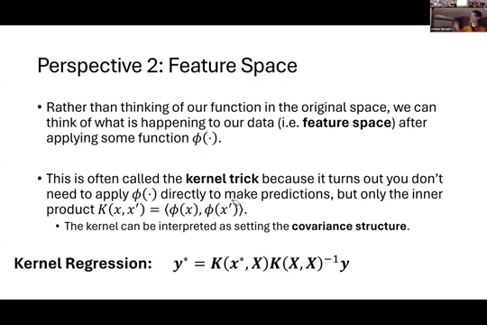
Slide from 2 seconds before the transition at: 40:53
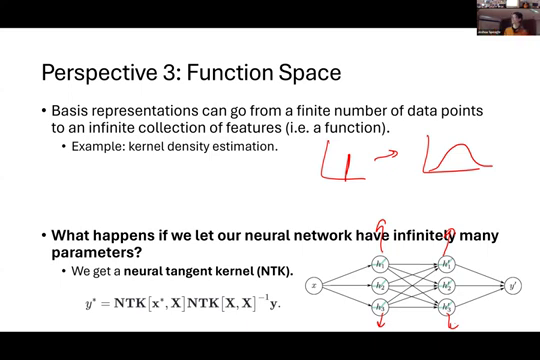
Slide from 2 seconds before the transition at: 41:20
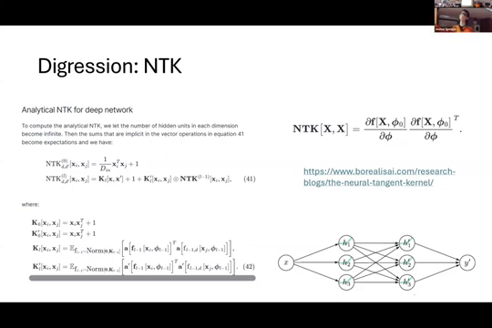
Slide from 2 seconds before the transition at: 42:12
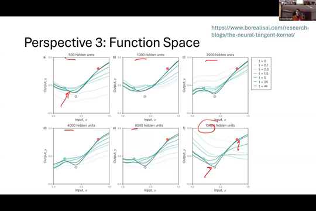
Slide from 2 seconds before the transition at: 43:10
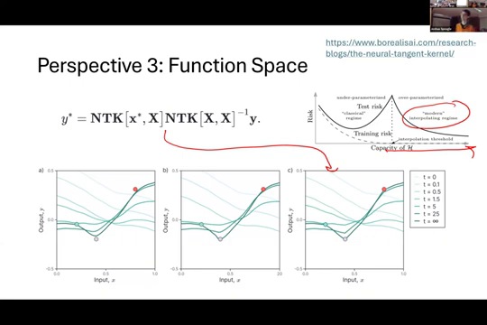
Slide from 2 seconds before the transition at: 45:47
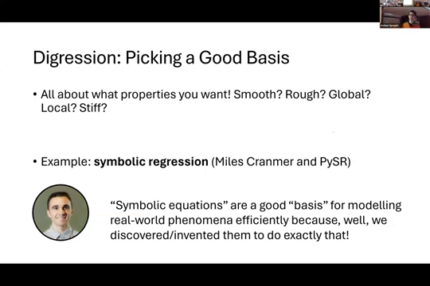
Slide from 2 seconds before the transition at: 47:17
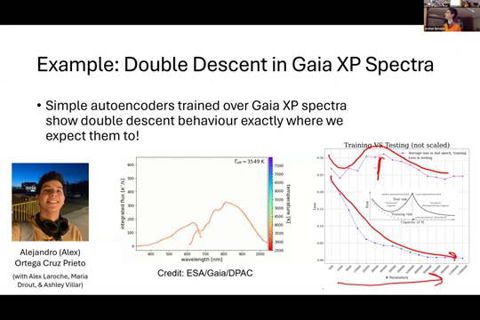
Slide from 2 seconds before the transition at: 47:25
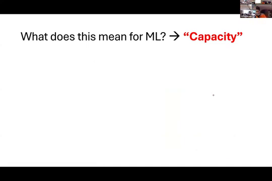
Slide from 2 seconds before the transition at: 54:02
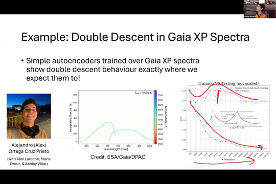
Slide from 2 seconds before the transition at: 55:47
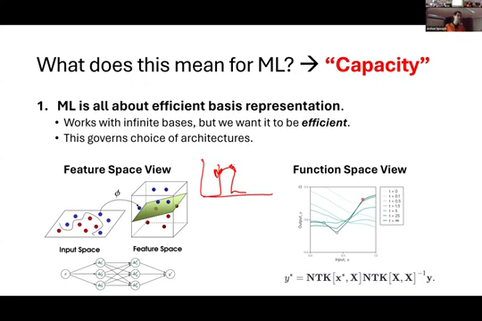
Slide from 2 seconds before the transition at: 56:18
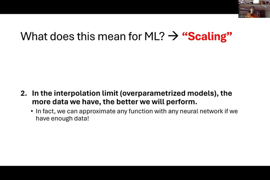
Slide from 2 seconds before the transition at: 61:49
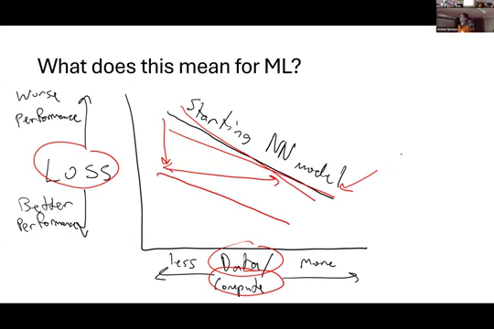
Slide from 2 seconds before the transition at: 62:10
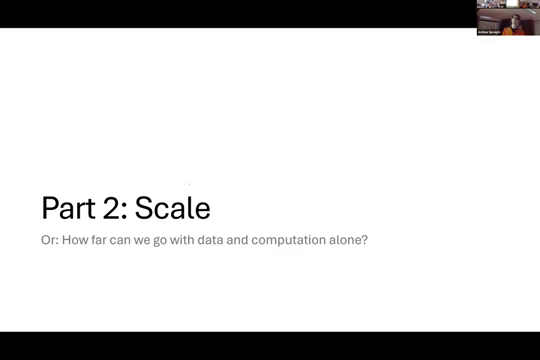
Slide from 2 seconds before the transition at: 63:00
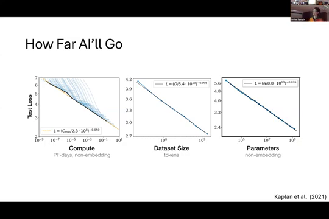
Slide from 2 seconds before the transition at: 63:56
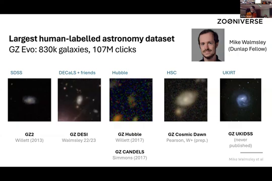
Slide from 2 seconds before the transition at: 65:11
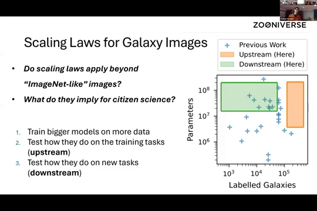
Slide from 2 seconds before the transition at: 65:16
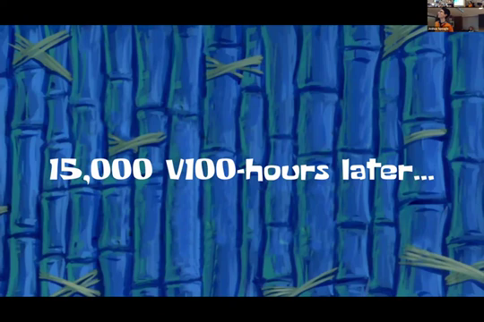
Slide from 2 seconds before the transition at: 66:53
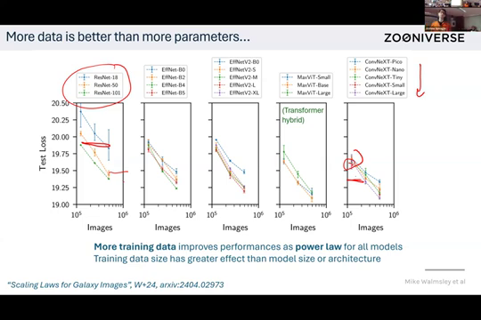
Slide from 2 seconds before the transition at: 67:58
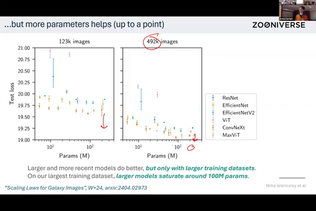
Slide from 2 seconds before the transition at: 68:26
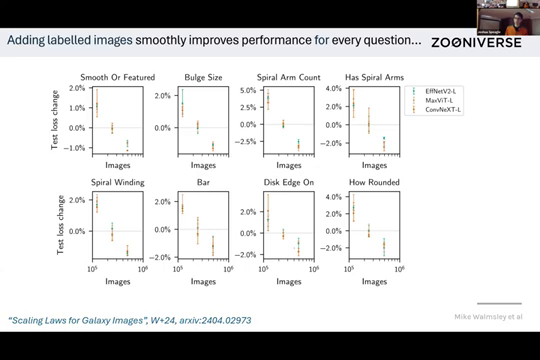
Slide from 2 seconds before the transition at: 69:30
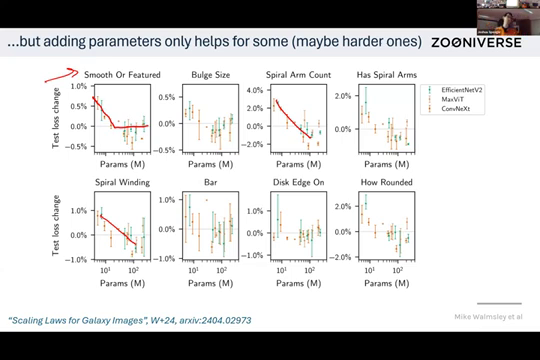
Slide from 2 seconds before the transition at: 70:06
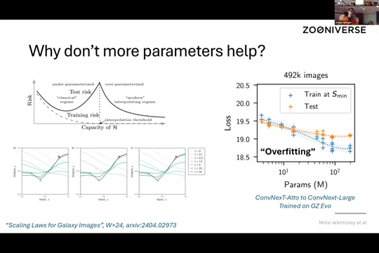
Slide from 2 seconds before the transition at: 75:13
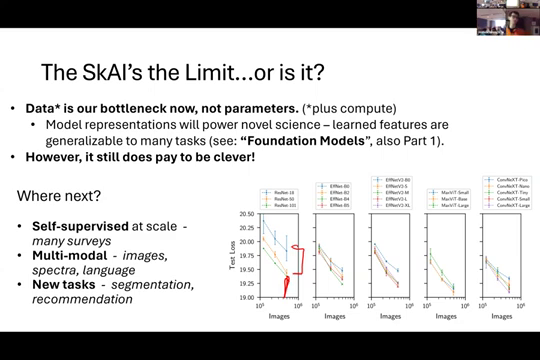
Slide from 2 seconds before the transition at: 75:34
Slide from 2 seconds before the transition at: 76:21
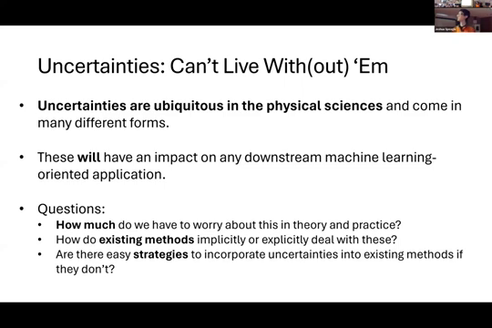
Slide from 2 seconds before the transition at: 78:37
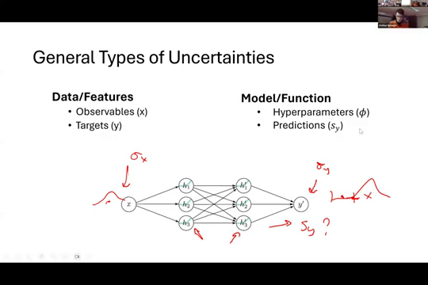
Slide from 2 seconds before the transition at: 79:17
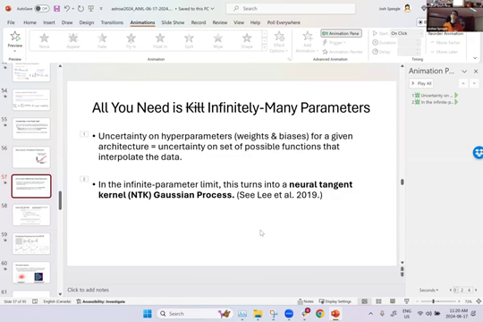
Slide from 2 seconds before the transition at: 79:22
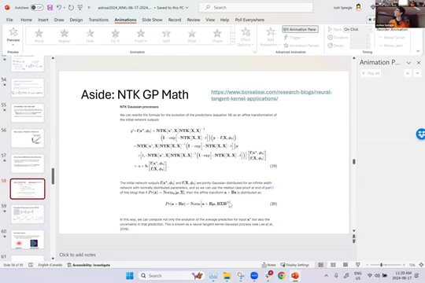
Slide from 2 seconds before the transition at: 82:24
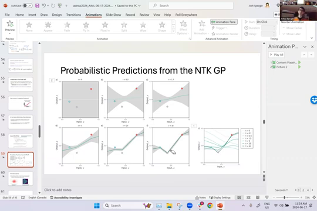
Slide from 2 seconds before the transition at: 83:31
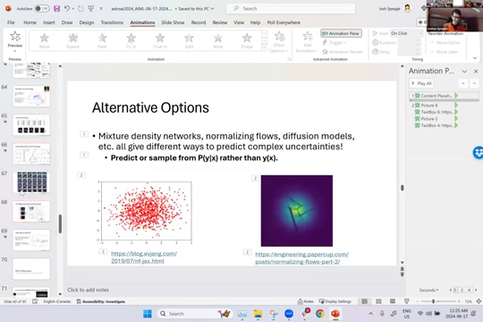
Slide from 2 seconds before the transition at: 24:02

Slide from 2 seconds before the transition at: 24:14
Slide from 2 seconds before the transition at: 24:49
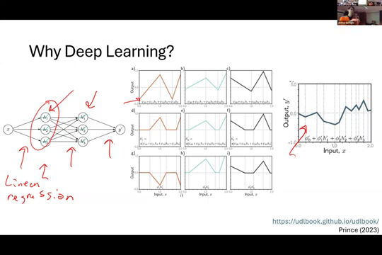
Slide from 2 seconds before the transition at: 24:50
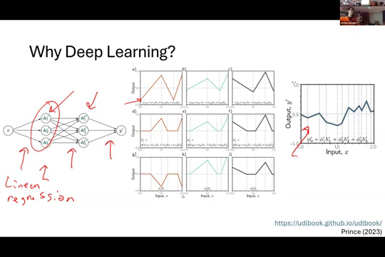
Slide from 2 seconds before the transition at: 25:15

Slide from 2 seconds before the transition at: 25:46
Slide from 2 seconds before the transition at: 25:54
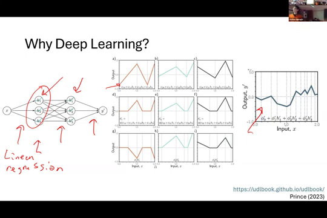
Slide from 2 seconds before the transition at: 26:21
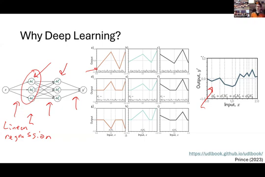
Slide from 2 seconds before the transition at: 26:21